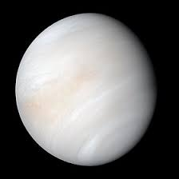

Vénus, surnommée "l’étoile du berger", est enveloppée d’une épaisse atmosphère de dioxyde de carbone.
Elle subit un effet de serre extrême qui en fait la planète la plus chaude du système solaire.
Sa surface est cachée par des nuages de soufre et elle tourne dans le sens inverse de la plupart des planètes.
* Type : Planète tellurique
* Distance moyenne au Soleil : ~108,2 millions de km
* Masse : 4,87×1024 kg
* Rayon : ~6 052 km
* Température de surface : ~462 °C